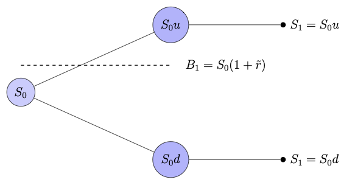
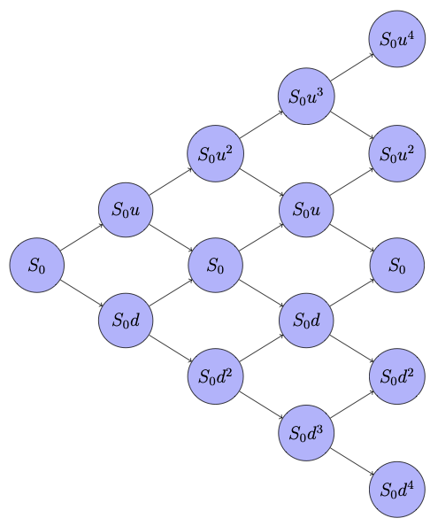

Discrete Time Models
In Chapter: «Portfolio and Arbitrage» , we derived pricing models for forwards and futures under the assumption that the market does not allow arbitrage opportunity. We now turn our focus to options pricing models, where our aim is to derive models that give the fair price of an option at the present time. Our models rely on certain criteria, namely the fair price criterion, the efficient market hypothesis, and the assumption that the market is arbitrage-free. Since option premiums depend crucially on the dynamics of the underlying asset, it is essential to understand stock price models before getting into option valuation.
Stock and option pricing models can be classified into two levels based on the time parameter, namely, discrete-time models and continuous-time models. Discrete-time models assume that time evolves in discrete steps (e.g., daily, weekly, or fixed time intervals). They are used to approximate the continuous behavior of stock prices and serve as a foundation for continuous time models.
In this chapter, we discuss discrete-time models for pricing underlying assets, with a particular focus on stocks, and options. Our primary aim is to understand the binomial pricing model and establish a theoretical framework essential for the analysis of financial models.
In Section «Click Here», we introduce the binomial model in its simplest form, involving only the present time and one future time. We keep the discussions simple to understand the basic idea behind the derivation of the model and also to explain why the model provides a fair price for an asset. First, we establish a general mathematical framework for the one-step binomial model for stocks. Then, using a replicating portfolio argument, we derive the option pricing model, leading to a formula for the option premium at the present time. Using our usual arbitrage portfolio argument, we then prove that the obtained fair price holds in an arbitrage-free market. In Section «Click Here», we extend the binomial model to multiple steps, where the stock movement across time levels is assumed to be independent. Again, we prove a mathematical framework for the multi-step binomial model for stocks and then extend our discussion to derive precise pricing models for option premiums with minimum mathematical technicalities. Once the methodology of the binomial model is established, we further refine the concepts in Section «Click Here» by developing a rigorous mathematical framework based on the theory of martingales.
Single-Step Binomial Model
Let \(t=0\) denote the present time at which the risky asset is purchased, and let \(t=T\) represent the end time of the investment period. In the case of options, \(T\) corresponds to the expiration time. In a one-step model, we consider only two time steps, \(t_0=0\) and \(t_1=T.\)
In this section, we derive the single step binomial model for option pricing when the underlying asset is a stock. The same approach can be adapted to other risky assets such as currencies and commodities. We begin by specifying the binomial model for the evolution of the underlying stock price.
Underlying Model
Since market information in future time is unknown at present, the asset price at a future time remains unpredictable. Consequently, the price movement from its current market value to the next time step is modeled as either an upward or a downward move. In this sense, stock price evolution is analogous to the outcome of tossing a possibly biased coin. At each time step, the model specifies the probability of an upward movement and, consequently, the probability of a downward movement.
The one-step binomial model assumes that the current stock price \(S_0\) is known at the present time \(t_0\) and models the stock price at a future time \(t_1\) as taking only two possible discrete values, denoted by \(S_u\) and \(S_d,\) where \(S_d < S_u.\)
Let us give a general mathematical framework for the model.
Let \(S_0\) be the given stock price at the present time \(t_0\).
A pair of multiplicative factors, denoted by \(d\) and \(u\), affecting the future stock price are obtained such that \(0 < d < 1 < u\). The stock price \(S_{1}\) at some future time \(t=t_1\) is given by
- either \(S_{1} = S_0 u\) (upward movement)
- or \(S_{1} = S_0 d\) (downward movement).
Consider the probability space \((\Omega, \mathcal{F}_*, \mathbb{P})\), where
for some \(0< p<1\). Define \(S_1\) as the random variable given by
The one-step binomial model involves the parameters \(\{u, d, p\}\).
The multiplication factors \(u\) and \(d\) can be obtained in various ways. One approach is through technical observations of the historical price movement of the stock, as illustrated in Example «Click Here» . These parameters can also be determined using the logarithmic return model discussed in Section «Click Here». Similarly, the probability \(p\) can be obtained as an observed probability (see Example «Click Here» for an ad hoc method of estimating \(p\)) or from the risk-neutral probability derived in the following subsection.
Risk-neutral Probability
For a theoretical foundation, we use the risk-neutral probability measure in the binomial model, which we will discuss in this subsection.
The risk-neutral probability is derived under the assumption that the market does not allow any arbitrage opportunities, i.e., the market is viable. We now state an important no-arbitrage condition, whose proof is left as an exercise.
Let \(t=t_0\) be the present time and \(t_1>t_0\) be a future time. Let \(B\) be a risk-free instrument offering a per-period interest rate of \(\tilde{r}>0\) for the period \([0, T]\), and \(S\) be a stock following an one-step binomial model \(\{u, d, p\}\). Then a market consisting of \((B,S)\) is arbitrage-free if and only if
where

The above figure illustrates one-step binomial model, where a discretely compounded risk-free interest scheme is considered.
The risk-neutral probability for a pair of multiplicative factors can be obtained by adopting the fair game criterion.
The fair game criterion may be stated as
The expected present value of a future claim should be equal to the current value of the claim.
The following example motivates the fair game criterion, which leads to the risk-neutral price for the game.
Consider a game in which a player rolls a six-faced die once. If the outcome belongs to the event \(E_1=\{3,4,5,6\}\), the player wins ₹ \(S_u=100\). On the other hand, if the outcome is in \(E_2=\{1,2\}\), the player receives only ₹ \(S_d = 20\). The gambling house charges an entry fee of ₹ \(S_0\) to play the game. The question is: What is the fair value of \(S_0\)?
Assume that the player has to pay the entry fee today and play the game after one year (\(T=1\)). Let \(S_T\) denote the payout at time \(T\). Given an appropriate risk-free interest scheme, one may take \(S_0\) as the present discounted value of \(S_T\). However, since \(S_T\) is unknown at the present time \(t_0\), we need a fair estimate of \(S_0\) that accounts for all possible values of \(S_T\).
To this end, we apply the binomial model with the multiplicative factors as
Further, it is necessary to decide upon the probability of winning the game. In this context, the probability of winning is clearly \(\mathbb{P}(E_1) = 2/3\). Thus, the expected value of the bet is \(\mathbb{E}(S_T) \approx 73.33.\)
By taking the present discounted value of \(\mathbb{E}(S_T) \) as the fair entry fee, we obtain \(S_0\), in accordance with the fair game criterion stated in Remark «Click Here» and is given by
This price is referred to as the risk-neutral price for the game, given the specific risk-free instrument.
In particular, if we consider a continuous compounding scheme with an annual rate of \(\tilde{r}=0.07\), then \(S_0 \approx 68.37\).
In the above example, the probability of success is explicitly determined by the rules of the game. However, this is not always the case. For instance, consider a scenario where a trader must decide whether to buy or sell a stock with given up and down prices \(S_u\) and \(S_d\) (similar to the setting in Example «Click Here» ), respectively. Then the probability of success is not apparent. Nevertheless, we know the current price \(S_0\) of the stock from the market. This leads to the following inverse question:
Given \(S_0\) (not necessarily the risk-neutral price), what is the implied probability that is consistent with \(S_0\) under a risk-free scheme with a given prevailing interest rate?
The following example illustrates the concept of implied probability in this context.
Let the prevailing annual interest rate be 6% with continuously compounded interest scheme and the stock at time \(t_0=0\) be \(S_0=\)₹ 750. Assume that the stock price in one year will be one of the two values ₹1260 or ₹ 675. Then the aim is to find the probability that it takes the value 1260.
The present values of the two possible values are given by
Using the fair game criterion, we have
This gives \(p\approx 0.2075.\)
The probability obtained in the above example is called the risk-neutral probability. Let us now derive the general formula for the risk-neutral probability.
Let the per-period interest rate be \(\tilde{r}\) and let \(u\) and \(d\) be such that \(0
By imposing the fair game criterion (Remark «Click Here» ), we obtain an expression for \(p\), which we denote by \(p^*\) given by
Using the no-arbitrage condition in Lemma «Click Here» , we see that \(p^*\in (0,1)\) and hence we can regard this as probability of the stock moving upward and is called the risk-neutral probability.
- If Mrs. Sahana is confident about her prediction that the share price will touch \(S_u\) with her observed probability 0.7, then find the risk-neutral price of the stock on the 2\(^{\rm nd}\) of January 2023. Answer: \(\approx\) 3270.37
- If the traded price of the stock on the 2\(^{\rm nd}\) of January 2023 is ₹ 3285 per share, then find the risk-neutral probability that the stock will touch \(S_u\) on the 2\(^{\rm nd}\) of January 2024. Answer: \(\approx\) 0.73303
European Option Pricing Model
The aim of options theory is to develop models that determine a fair price for a given option. In this section, we derive the one-step binomial pricing model based on the corresponding stock model formulated in the previous subsection.
We develop the one-step binomial pricing model for European options. The time partition of the option period \([0, T]\) is taken as \(\mathbb{T}_1 = \{t_0=0, t_1=T\}\), where the underlying stock price at time \(t_0\) is \(S_0\), and at expiration time \(T\), it is \(S_T\).
To motivate the derivation, we build the intuitive framework from the writer's perspective.
The key question is:
How much should the writer have in hand at time \(t_0\) to fulfill the obligation of settling the option contract at expiration \(T\)?
This leads to the fundamental problem of hedging the option position.
The writer's obligation at time \(T\) is the payoff \(H_T\) of the option, where
Since the premium must be determined at time \(t_0\), \(S_T\) is unknown and must be treated as a random variable. In the one-step binomial model, \(S_T\) is assumed to take two possible values, scaled by the multiplication factors \(u\) and \(d\), which satisfy the no-arbitrage condition Lemma «Click Here» for a given risk-free instrument with a given prevailing interest rate.
Let us define
Recall from Remark «Click Here» that a spot portfolio consists of two vector components representing the spot market positions in risk-free and risky assets. We consider a spot portfolio with single position in each asset, denoted by \(\Pi = (\phi, \theta)\), where \(\phi\) denotes the number of units held in the risk-free asset, and \(\theta\) denotes the number of units held in the risky asset. Recall, a negative value of a component indicates a short position in the asset, whereas a positive value indicates a long position.
To meet the payoff obligation, the writer must construct a spot portfolio \(\Pi_1 = (\phi_1, \theta_1)\) at time \(t_0=0\) such that the value of the portfolio at \(t_1=T\) equals the payoff \(H_1 (=H_T)\). In other words, the writer must set up the spot portfolio \(\Pi_1\) such that
Such a portfolio is called the replicating portfolio or the hedge portfolio for the option \(H\). It completely eliminates the writer's risk in selling the option, irrespective of whether the stock takes the upward or downward value at time \(t_1=T\) considered in the one-step binomial model.
Although the hedge portfolio meets the payoff obligation, the writer has to spend an initial cost to set up the portfolio at time \(t_0\). Naturally, the writer would charge at least the initial cost of this portfolio as the option premium. Observe that any amount more than this initial value would be a risk-less profit for the seller. Consequently, a rational buyer would be willing to pay, at most, the initial value of the hedge portfolio.
Let us now derive the formula for the option premium in the one-step binomial model, building on the intuitive ideas discussed above.
Step 1: [ Constructing a replicating portfolio]
The portfolio \(\Pi_1 = (\phi_1,\theta_1)\) needs to be constructed at \(t_0\). Assume that the corresponding prices are \((B_0,S_0)\) and the per-period prevailing interest rate is \(\tilde{r}\).
Since there are two possibilities for \(S_1\) at the time level \(t_0\), the replicating condition (5.4) leads to the linear system
where \(I(\tilde{r})\) is given by Lemma «Click Here» and \(H_{T}\) values are given by (5.3). We can obtain \(\Pi_1\) by solving the linear system (5.5). Since \(u>d\), the system (5.5) has a unique solution. Hence, for a given \(\tilde{r}>0\), every option with the underlying asset following the one-step binomial model possesses a unique replicating portfolio at any time \(t < T\).
Solving the system (5.5) yields
For a given set of parameters \(\{\tilde{r}, u, d, B_0, S_0\}\), the portfolio \(\Pi_1\) constructed using the formulae (5.6) at the present time \(t_0\) is the {replicating portfolio} or the hedge portfolio for the option position to be hedged.
Step 2: [ Matching the initial investment]
The initial investment is given by
Using (5.6), we get
where
is the risk-neutral probability. By the definition of expectation, we have
where \(H_{T}^* = \frac{H_T}{I(\tilde{r})}\) is the discounted payoff of the option.
In the following theorem, we prove that the option price derived using the replicating portfolio argument also holds in an arbitrage-free market.
Consider a set of parameters \(\{\tilde{r}, u, d, B_0, S_0\}\). For a given option, if \(\Pi_1\) is a replicating portfolio in a no-arbitrage market for a given European option, then the price \(H_0\) of the option at the present time \(t_0=0\) is given by
Suppose that \(H_0>\phi_1 B_0 + \theta_1 S_0\) (why are we assuming this?).
In this case, we construct a portfolio \(\Pi_1\) at \(t=0\) with the following trades:
At time \(t=T\), the value of the portfolio \(\Pi_1\) is
Using replicating strategy, we see that
irrespective to whether the stock goes up or down. Thus, \(\Pi_1\) is an arbitrage portfolio.
Similarly, we can construct an arbitrage portfolio for the case when \(H_0<\phi_1 B_0 + \theta_1 S_0.\)
Multi-step Binomial Model
We now extend the binomial model to multiple steps (also called binomial lattice model or binomial tree model). As in the one-step case, we first establish the mathematical framework for the underlying stock and then derive the model for option premiums in arbitrage-free markets.
Stock Price Model
One can understand the multi-step binomial model by drawing an analogy to repeatedly tossing multiple coins or tossing a single coin multiple times.
Starting from \(t_0=0\), one can apply the one-step binomial model sequentially to progress to any time \(t_{n}\), where \(n=1,2,\ldots\). This process forms the multi-step binomial model, more precisely referred to as the \(n\)-step binomial model.
Assume that a stock is purchased at the present time \(t_0=0\) for an amount of \(S_0\) per share. Also, assume that the stockholder has to sell the stock at some future time \(t_n=T>0\).
To construct an \(n\)-step binomial model, first consider the uniform partition
of the holding period \([0,T]\). Discrete time models assume that the transactions occur only at times \(t\in \mathbb{T}_n\) and hence are developed to work on a given time partition instead of the whole interval \([0,T]\).
The stock price at each time \(t=t_k\), for \(k=0,1,\ldots,n\), is denoted by \(S(t_k)\) or \(S_k\) (for notational convenience). In the \(n\)-step binomial model, the stock price process \(\{S_k~|~k=1,2,\ldots, n\}\) is formulated as follows:
Given \(S_{k-1}\) at time \(t=t_{k-1}\), for \(k=1,\ldots, n\), the binomial model assumes only two possibilities for \(S_{k}\), namely,
- \(S_{k} = S_{k-1} u_k\), for some upward factor \(u_{k}>1\), which is referred to as an upward movement; and
- \(S_{k} = S_{k-1} d_k\), for some downward factor \(d_{k}<1\), which is referred to as downward movement.
where \(\Omega_k = \{u_k, d_k\}\), for each \(k=1,2,\ldots, n\). Elements of \(\Omega\) are denoted by the \(n\)-tuple \(\boldsymbol{\omega}=(\omega_1,\omega_2,\ldots, \omega_{n})\), where each \(\omega_k\) takes a value of either \(u_k\) or \(d_k\) with \(0 < d_k < 1 < u_k,\) for \(k=1,\ldots,n\).
For any given \(k\in \{1,2,\ldots,n\}\) we use the notation
With these notations, we can write \(\Omega = \Omega_k'\times\Omega_k''\), for each \(k=1,2,\ldots,n\), and therefore any \(\boldsymbol{\omega}\in \Omega\) can be written as \(\boldsymbol{\omega} = (\boldsymbol{\omega}_k',\boldsymbol{\omega}_k'')\) with \(\boldsymbol{\omega}_k'\in \Omega_k'\) and \(\boldsymbol{\omega}_k''\in \Omega_k''\).
For any given \(\boldsymbol{\omega}_k'\in \Omega_k'\), define
We can see that, for any given \(k\in \{1,2,\ldots,n\}\),
forms a partition of \(\Omega\). Also, we can see that \(\texttt{P}_{k+1}\) is finer than \(\texttt{P}_k\), for \(k=1,2,\ldots,n-1\).
We use the convention that \(\texttt{P}_0 = \{\Omega\}\).
For theoretical reasons, we need to assume that the outcome at any time step \(t=t_k\) is independent of the outcomes at all the previous time steps. Although this assumption is intuitive in the case of repeated coin tosses, its validity in stock price processes is less obvious.
In financial markets, the well-known efficient market hypothesis may be used as a motivation for modeling successive price changes as independent in simple discrete-time models.
The efficient market hypothesis may be stated as follows:
The current price of a risky asset fully reflects all available information, and changes only in response to new information.
In the derivation of the model, we assume that the successive returns (or equivalently the up/down movements of the stock price) are independent and identically distributed. Consequently, the probability space \((\Omega, \mathcal{F}_*, \mathbb{P})\) is given by the product space
for \(\boldsymbol{\omega}=(\omega_1,\omega_2,\ldots, \omega_{n})\in \Omega\).
An \(n\)-step binomial model defines the stock price \(S_n\) at \(t=T\) as a random variable given by
where each \(\omega_k\in \{u_k, d_k\}\) with \(0 < d_k < 1 < u_k,\) for \(k=1,\ldots,n\).
The parameters involved in an \(n\)-step binomial model are given by the set \(\{\boldsymbol{u}, \boldsymbol{d}, \boldsymbol{p}\}\) where \(\boldsymbol{u}=(u_1, u_2,\ldots, u_{n}),\) \(\boldsymbol{d}=(d_1, d_2,\ldots, d_{n}),\) and \(\boldsymbol{p}=(p_1, p_2,\ldots, p_{n}),\) are \(n\)-dimensional vectors representing the upward factors, downward factors, and associated probabilities.
It is customary to assume
Then for each \(\boldsymbol{\omega}\in \Omega\), there exists an integer \(j\) with \(0\le j\le n\) such that
Furthermore, assuming an equal probability \(p\) of obtaining \(u\) at every time step, we get
The above discussion shows that in the binomial model, with a specific choice of parameters \(u_k=u\), \(d_k=d\), and \(p_k=p\) for \(k=1,2,\ldots, n\), the number of up moves follows a binomial distribution. In this case, we denote the set of parameters of the \(n\)-step binomial model for the underlying asset as \(\{u, d, p\}\) with \(n\ge 1\).
Each element \(\boldsymbol{\omega}\in \Omega\) can be interpreted as a path in the binomial lattice, referred to as a sample price path, leading to a terminal stock price \(S_n(\boldsymbol{\omega})\). The lattice (or tree) diagram of a \(4\)-step binomial model is illustrated in Figure «Click Here» in a specific case where \(d=1/u\).
Similarly, the probability of an upward movement \(p\) can be chosen in various ways. In Section «Click Here», we obtained the risk-neutral probability in one-step binomial model using the fair game criterion stated in Remark «Click Here» . This concept can also be extended to the \(n\)-step binomial model.
where \(I\) is given in Lemma «Click Here» with \(\tilde{r}\) being the per-period interest rate for the period \([0, T]\), \(u\) is the identical upward factor, and \(d\) is the identical downward factor in the \(n\)-step binomial model with \(n\ge 1\).

determine the following:
- Find the stock price if the sample price path involves 7 upward movements.
- Find \(\mathbb{P}(\{S_{30}\le S_0 u^7d^{23}\})\).
- Find \(\mathbb{P}^*(\{S_{30}\le S_0 u^7d^{23}\})\), where \(\mathbb{P}^*\) denotes the risk-neutral probability measure with the probability of upward movement being \(p^*\) given in Remark «Click Here» with \(\tilde{r}=0.03\) continuously compounded.